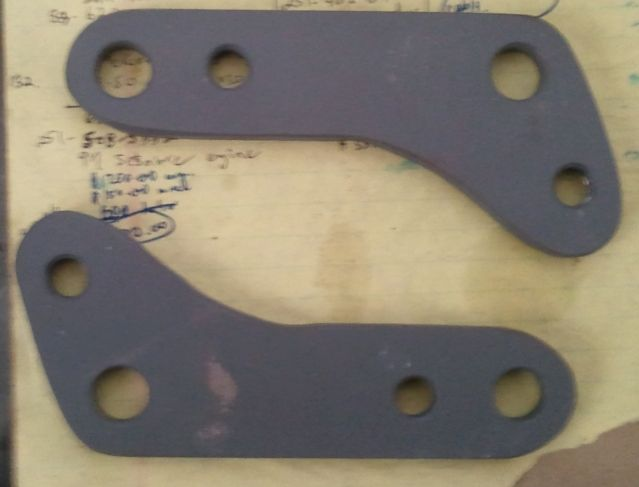
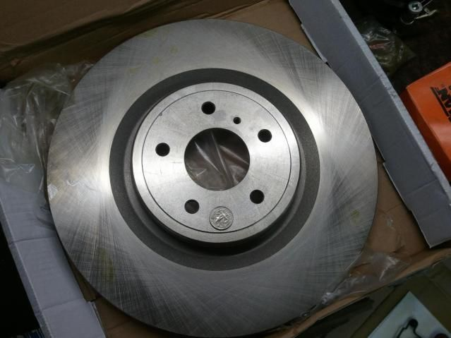
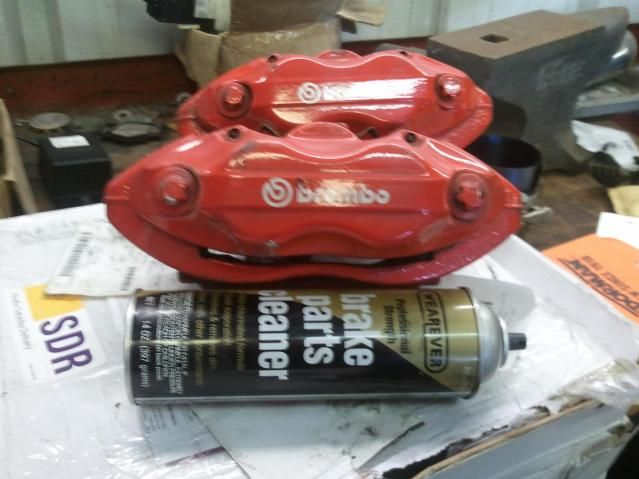
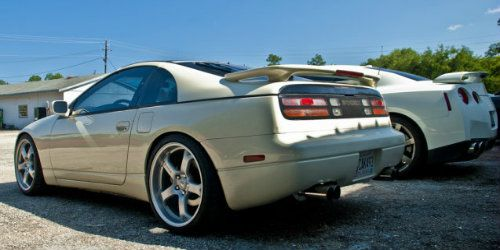

-
ya the S-chassie knuckles shouldn't need any mods except to open up the braket mount holes for my calipers. i was mainly worried about clearing my old school Riken wheels. -
ok so now im a little lost on the size of my calipers. i know i use the 296mm rotor but what i need to know is if either i use the 30mm or 32mm thick rotor. so if anyone on here have either of the 2 calipers would you be able to messure the gap of the caliper from the top where you instal the pads? i belive mine are 33mm wide but im not sure if they are suposed to be 1 or 2mm bigger. im asuming i need the 32mm rotors but ive been wrong before. -
if you have R32 GTR NON-v-spec then you have 32mm rotors, which are actually a bit bigger, the 32mm is more like minimum thicknesscjlewisz31 wrote: ok so now im a little lost on the size of my calipers. i know i use the 296mm rotor but what i need to know is if either i use the 30mm or 32mm thick rotor. so if anyone on here have either of the 2 calipers would you be able to messure the gap of the caliper from the top where you instal the pads? i belive mine are 33mm wide but im not sure if they are suposed to be 1 or 2mm bigger. im asuming i need the 32mm rotors but ive been wrong before. -
hmm.... they might be smaller. however the bolts are a lot bigger than the original bracket holes so would that tell you anything? ive done a z32 swap on an S-chassie but none had these bolts. -
What rotors did you use?FLAZH007 wrote: Ok so heres mines....
Have everything 87 hubs and all
5/16th spacer.
Made my own o rings from some similar size rubber o rings I got from Ace Hardware.But I did get the compleat rebulid kit.
30mm from 91 z32TT
Still need longer studs…
This is what happens when you dont use some kind of spacer on 87T OEM wheels
Shiro #562
vg33et66- satan log manifold- satan racing plenum- 800cc o-ring injectors- Schneider
s2 cams- Schneider valve springs- jwt 450hp kit- stance gr+ coilovers- Starion Wheels
soon to be replaced by Epsilon Southern Ways 16x10 3piece wheels
sigpic -
[quote]hds84t wrote:Z32 Brembo rotors.OEM size(280mm)diameter.Dont know about the thickness though.Originally posted by FLAZH0071985-5 speed swap with '87 suspension.
1987 turbo-parts car,engine rebulid in process.
-
Whats with the add saying rear studs only, is there really a difference between front and rear?MuhKaydenZ wrote: I used the 30 mm z32 brakes and rotors and I had to use 86t wheels to clear I tried 85t wheels and they did not clear I later had to get longer studs and a small spacer to get my other wheels to work
Longer Studs I purchased them from ebay link below
http://www.ebay.com/itm/330629773859?ss … 1497.l2649
After with a small spacer
Replaced my BMC with one from a Z32 link below made it plug and play
http://www.ebay.com/itm/250810617597?ss … 1497.l2649
-
Iâm using them for the front with the spacer and there working fine for me....Greasedmonkey wrote:
Whats with the add saying rear studs only, is there really a difference between front and rear?1985-5 speed swap with '87 suspension.
1987 turbo-parts car,engine rebulid in process.
-
Have you guys seen this yet? A guy made mention of it on a For Sale thread and I did some googling. I wonder what size wheel we would need to fit over it. It bolts onto a Z32, so it should bolt onto 87-89 turbos as well. The guy is selling adapter brackets to bolt on SRT8 Charger/Challenger/300C/Cherokee Brembos and 14.25" rotors.
http://forums.nicoclub.com/akebono-1…s-t545946.htmlPrius… because Pretentious wouldn't fit across the back of the car…
Cheap, Fast, Reliable - pick any two
My 1986 Turbo Build -
Yeah, I bought the brackets from that guy. Brackets, calipers, rotors, and wagner ceramic pads, $550.00. But, the rotors are actually 13.97". Still badass.jaqattack02 wrote: Have you guys seen this yet? A guy made mention of it on a For Sale thread and I did some googling. I wonder what size wheel we would need to fit over it. It bolts onto a Z32, so it should bolt onto 87-89 turbos as well. The guy is selling adapter brackets to bolt on SRT8 Charger/Challenger/300C/Cherokee Brembos and 14.25" rotors.
http://forums.nicoclub.com/akebono-1…s-t545946.html



Foreign and Domestic Autocare -
Finally .. Driven Authority's WINFactory BBK for Z31s is on their website.
http://www.drivenauthority.com/shop/WF_Z31_122BBK.html
This is what's on my Z. Is it like other's - NO. Can it be upgraded - YES. Infact, Driven Authority can (and is putting together) options (caliper changes, etc..) for those interested.
So before you all go crazy in comparing kits .. consider that this is an alternative. And it's mass - produce-able. Meaning, it's not a 1-off.
And Driven Authority stands behind it's products. -
Doesn't say which caliper gets relocated, but I'm probably safe in assuming they are using z32 calipers? 26mm rotors (z31 87t+) aren't a standard size for the nascar world (12.2" is ~310mm) even for rears
Nice to know other vendors are trying though
-
Front .. OEM z31 caliper .. although z32 calipers will work.G-E wrote: Doesn't say which caliper gets relocated, but I'm probably safe in assuming they are using z32 calipers? 26mm rotors (z31 87t+) aren't a standard size for the nascar world (12.2" is ~310mm) even for rears
Nice to know other vendors are trying though
I will caveat .. this BBK is on my Z (84) .. during development, there wasn't (still don't) a 87+ z31 to "test".
And to be totally honest, I'm not knowledgeable enough to know the differences in braking components from Zenki vs. Kouki vs. Chuki …
And yes .. I asked for something that wasn't quite as robust as the AZ system (I didn't want to spend that kind of $$). And the thoughts were .. Why duplicate what the AZ system has. It's already there, and proven. Can't be marketed for less (only copied). The Driven Authority - WINFactory provides a "product" (meaning - it's available for purchase complete. You don't have to assemble or make your own parts). In the works is enhancements .. ie .. upgrading the calipers to z32 or Willwoods, etc .. or to allowing the Driven Authority WINFactory Z32 BBK "fit".
Thereby providing a "range" of BBKs depending on budget and applications. -
In that case these would be 22mm discs, and those ARE common
I thought of doing a kit exactly like that before I disappeared, but then I realized it would only be good for regular driving nothing hardcore
Using 1-piece rotors from the rear of something else nissan makes 5-bolt was my intention, but I just couldn't reliably source them (overseas models)… ironically now with the domestic 370z/g37s, akebono brakes, the rears are ~22mm and over 13", it would be easier -
These are 310mm rotors .. and yes there are larger out there .. requiring different brackets to adjust caliper mounting. I won't say infinite combinations .. but enough to make it not cost effective for any vendor to develop nor stock.
As I posted earlier in this thread.
1. This is an alternative BBK. It's not for everyone, no matter how good a driver they think they are.
2. Anyone can probably duplicate this kit, by themselves, as a one-off (getting deals with friends, etc…) but try to mass produce it (group buys, collecting inventory, etc..) and then sell it.
For those that developed their own kit .. I applaud you! I'm envious of your talents. I'm not so inclined to trust my mechanical abilities when it comes to brakes .. but that's just me.


Copyright © 2006–. All rights reserved. Privacy Policy